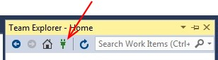

Source Control
Source control systems are powerful mechanisms for teams of
programmers and other collaborators to manage multiple copies of
various source files that all may be modifying. CIS 300 does not
involve teamwork, but we will be using it
as a mechanism for assignment submission - your "collaborators"
will be the graders. There are several
benefits to using the source control provided by Visual Studio:
- It is more reliable than K-State Online.
- It is easy to ensure that all required files have been
submitted.
- It is easy to "checkpoint"
your programs - if at some point you discover you've gone down
a wrong path and want to retrieve code that you have since
modified, you can do this easily.
- You can access your checked-in code from any machine with Visual
Studio 2015 and internet access.
- You will get an introduction to a technology that's indispensable
for the professional programmer.
In this class, you will be using Microsoft's Team Foundation Version
Control. This source control system uses a Team Foundation Server
to store the code under source control. When you set up source
control, you will define a web address where your Team Foundation
Server will manage your code. Only you and your collaborators
(i.e., the graders) will have access to your code.
The code managed on a Team Foundation Server is organized into
projects. These projects are different from Visual
Studio projects (see "Visual
Studio Projects"). In particular, all of your code for this
class will be placed in the same Team Foundation Server project.
This project will be mapped to a workspace, which
is simply a folder, on each of your local machines (i.e., the
server you use in lab and any of your own machines you want to
use). The workspace will mirror the files and folders in the
project mapped to it, although the workspace may also contain
files and folders that have not been uploaded to the project.
The Team Foundation Server provides much more functionality than
simply a mirror for your workspace. The main feature we will be
using is that whenever new versions of a file or folder are
uploaded, they don't replace the old version - all uploaded versions are
maintained with timestamps giving the dates and times when they
were uploaded. Because these timestamps are maintained by the
remote server, they are trustworthy evidence of when the files
were uploaded.
Because the Team Foundation Server keeps all versions of a file or
folder deleting, moving, or renaming a file or folder after it
has been uploaded is problematic. In fact, it is something that
should be avoided. If something needs to be renamed or deleted
after it has been uploaded, it is often best to make a copy of
the entire folder (named something like, "Lab 3 - redo") and
make the required changes before uploading the new folder.
Setting up source control with Visual Studio requires a few steps:
- Get a Microsoft® account. If you already have a Microsoft
account, you can go on to Step 2. Otherwise, go to the
Microsoft Account web page and click the "Create account"
button. In the form on that page, the user name is any email
address you want to use to sign in (you can get a new email
address from Microsoft by clicking the "Get a new email address"
link).
- Sign in with Visual Studio. Click on the
"Sign in" button near the upper right corner of the Visual Studio
window, and sign in on the resulting dialog with your account name
(i.e., email address) and password.
- Create a Visual Studio account. When you have signed in
with Visual Studio for the first time, you will be presented a
dialog to create a Visual Studio account. (If you are not given
this dialog, you can go to www.visualstudio.com/en-us/connect-vs.aspx,
click on the "Get started for free" button, and sign in with your
Microsoft account. Important: Do not click the
"Sign in with your work or school account" link.) Supply the
required information (you don't need to provide a phone number).
Fill in the box under "Create a Visual Studio Team Services site
(optional)" by inserting into the blank space the completion of
the web address you want to use for your Team Foundation Server.
You can fill in anything you want for this part of the URL, but it
will be disallowed if it is already taken. You will need to
remember this URL. After you have filled in the required
fields, click the "Continue" button.
- Create a source control project. After your Visual Studio
account has been created,
you will be given a dialog to create your first project. As
described above, this project will contain all of your
assignments for CIS 300. At the beginning of the semester, you
will be given the project name to use. Set the process template
to "Agile", and select the "Team Foundation Version Control"
radio button. (Note: You must use Team
Foundation Version Control for this class.) Then click the
"Create project" button.
- Sign in with your web browser. After your
project has been created, you will be sent an
email informing you that your account is ready. In that
message, click on the link to your account URL. This will take
you to your Visual Studio
account in your web browser. (Note: If you don't
get this email right away, try opening the URL you created above
for your Visual Studio account - you will probably be able to
access it.)
- Add members to your
project. In order for the graders and instructor to be able to
access your work, they will need to be added to your project. To do
this, click the "Browse" link under "Recent projects & teams", select
the project you created above, and click the "Navigate" button. If
you then get a "Congratulations" popup - just close it. On the
resulting page, find the "Team Members" section, and click on the
"Invite a friend" button. In the resulting popup, click the "Add..."
button and fill in the email addresses of the graders of the graders
(you will be given these in lab), then click the "Save changes"
button (don't worry if it indicates "no identities found"). If you
enetered the email address correctly, each of the graders'
names should appear under "Display Name"; however, if a name does
not snow, you will need to click the "Remove" link to the right and
try again. (Note: You should not add any users other than
those associated with CIS 300 grading and instruction.) Once you have
successfully added all the graders, click the "Close" button.
- Connect with Visual Studio. To connect to your project
with Visual Studio, within your project page in your web
browser,
click on the link, "Open in Visual Studio".
Depending on your browser, you may get a dialog asking you to
confirm that you want to run a program - confirm this. This
will open another instance of Visual Studio with the "Team
Explorer" window open (you might as well close the first
instance of Visual Studio at this point).
- Configure your workspace. In the Visual Studio Team
Explorer on the right, you will see two boxes under "Configure
Workspace". To the right of the second of these boxes,
click the "..." button and navigate to a folder where you want
to keep all your assignments for the semester (the default
location is fine, but in any case, if you are using a lab
machine, it should be a sub-folder within the folder
C:\Users, and within the sub-folder having your login
name). Then click the "Map & Get" button. You should see a
message near the top of the Team Explorer window: "The workspace
was mapped successfully."
At this point, source control is set up and ready to use. Whenever
you open Visual Studio on this machine, you should have access
to all of your managed solutions, as described in what follows.
To create a new solution under source control, proceed as you normally
would, but in the "New Project" dialog, select as the location a
new folder (named something like "Lab 2" or "Homework 3", as
appropriate) within the folder you selected when you configured
your workspace above, and check the "Add to source control" box.
To add an existing solution to source control, you will first need to
make sure that it is located within your source control folder
(you can move the entire containing folder if necessary). Then
open that solution, and in
the Solution Explorer, right-click on the solution name, and
select "Add Solution to Source Control..." from the resulting
popup menu.
Simply placing a solution under source control won't upload anything to
the server - it just defines
this solution as one you want to manage.
When you have code that you want to upload, either to submit it for
grading or just to
checkpoint it, from the Solution Explorer, right-click on the
solution name and click, "Check In...". This will open the Team
Explorer showing Pending Changes. In the "Comment" section, you
can provide a comment. This comment should be descriptive of
this version of the program so that you can find it later if you
are looking for it. Then click the "Check In" button, and click
"Yes" on the resulting Check-in Confirmation dialog. This will
upload this version of your solution to your Visual Studio
account. As you are editing your code, you can periodically
check in versions in this way so that you can access them later
if need be (there is no limit to the storage available to you on
your Visual Studio account). Within the Solution Explorer, a
blue "Checked-in" icon will appear next to each part of your
solution that is unchanged since its last check-in, and a red
"Checked-out" icon will appear next to each part that has been
changed since its last check-in. Thus, you can readily tell if
your entire solution has been uploaded - there will be a blue
"Checked-in" icon next to each source code file.
If you want to access your checked-in code from a different machine,
first open Visual Studio, then open the Team Explorer window
(you can always find it via the View menu if you don't see a tab
for it). In the Team Explorer, click on the "Manage
Connections" icon at the top:

Then click on the "Manage Connections" link, and select "Connect to
Team Project" from the resultion popup menu. In the resulting
dialog, click the "Servers..."
button in the upper right-hand corner. In the subsequent
dialog, click the "Add..." button in the upper right-hand
corner. This will open yet another dialog, in which you can
type the URL of your Visual Studio account. Then click the
"OK" button. You will then be prompted for the user name
(i.e., your email address) and
password for your Visual Studio account. Once you have signed
in, you can close the "Add/Remove Team Foundation Server"
dialog. At this point, the "Connect to Team Foundation Server"
dialog will list your source control projects - check the box
next to the one you want (there will probably only be one), and
click the "Connect" button. You will then need to configure
your workspace as outlined in step 7 above. This will download
the contents of the project to your workspace. Furthermore,
if you subsequently check in a solution on one machine, you can
propagate the changes to the other as follows:
- Open the solution on the machine you want to update.
- In the Solution Explorer, right-click on the solution name, and select
"Get Latest Version (Recursive)".
You can also access the latest version of any solution via the Source
Control Explorer, which you can access from the Team Explorer
window (if you don't see it, click the icon that looks like a
house at the top, and it should appear). This window allows you
to browse all projects on your Visual Studio account. You can
open the latest version of any solution by double-clicking it.
Now suppose that at some point in writing a program, you decide you
want to look at an earlier version that you checked in. There
are several ways to do this. First, you can
right-click on the
file you want in the Solution Explorer and select
"Source Control‑>View History". This will open a
window listing the different versions of this file, together
with the date and time each was checked in and the comment that
was supplied for the check-in. One way of viewing a specific
version is to right-click on that entry in the list and select
"Compare..." from the popup menu. This will open a window
displaying the checked-in version of this file on the left and
the current version on the right. Code that was removed from
the checked-in version is highlighted in pink, and code in the
current version that has been added is highlighted in green.
Code can be copy-pasted from the earlier version to the current
version.
Sometimes you may want to revert back to an earlier version of a
file. First, it would be a good idea to check in the current
version, just in case (this also tends to avoid conflicts that you
may need to resolve). To obtain an earlier version of a file, go
back to the History window for that file,
right-click on the version you want, and select "Get This
Version". That version will then be opened in Visual Studio as
the current version.
Alternatively, you may want to revert an entire solution to an earlier
version. To do this, right-click on the solution in the Solution
Explorer, and select
"Source Control‑>Get Specific Version...". If
you want to revert back to the latest version that was checked in
by a specific date and time, in the resulting dialog, set the type
to "Date", fill in the date and time you want, and click the "Get"
button. Or if you want to browse the available changesets, set the type to
"Changeset", click the "..." button, optionally narrow down your
search by a range of changeset numbers or times, and click the
"Find" button. This will list all matching changesets, together
with their checkin times and comments. Select the one you want
to revert to by double-clicking, then clicking the "Get" button.
If you check in a solution after you have reverted to an earlier
version, conflicts may be detected. To resove these conflicts,
you will usually want to click the "Keep Local Version" button.
This will cause the current version you are working on to be
checked in as the current version on the server. (Nothing on
the server will be deleted - you can still revert back to other
versions.) Once you have resolved the conflicts, you will need
to try to check it in again.
It is important to realize that once you have checked in files, they
are difficult to delete by accident. Thus, frequent
check-ins might save you from a number of problems that might
occur.
There are a lot of other things you can do with source control, but
most are useful mainly for collaboration on projects. The
functionality described here is likely sufficient for your needs
in CIS 300.